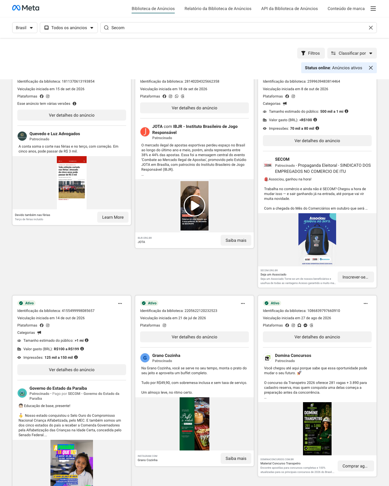
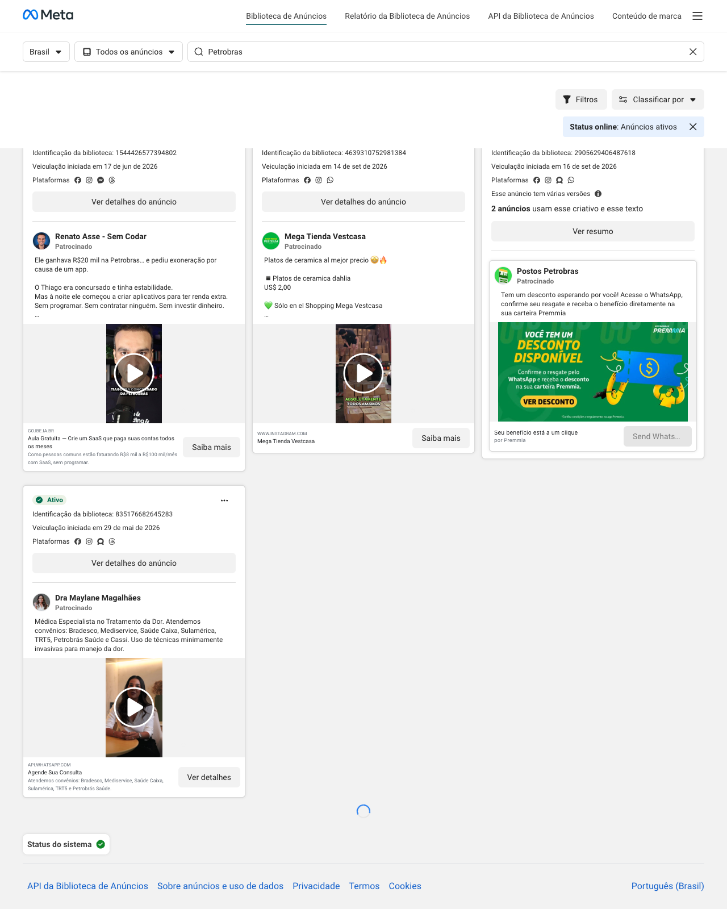
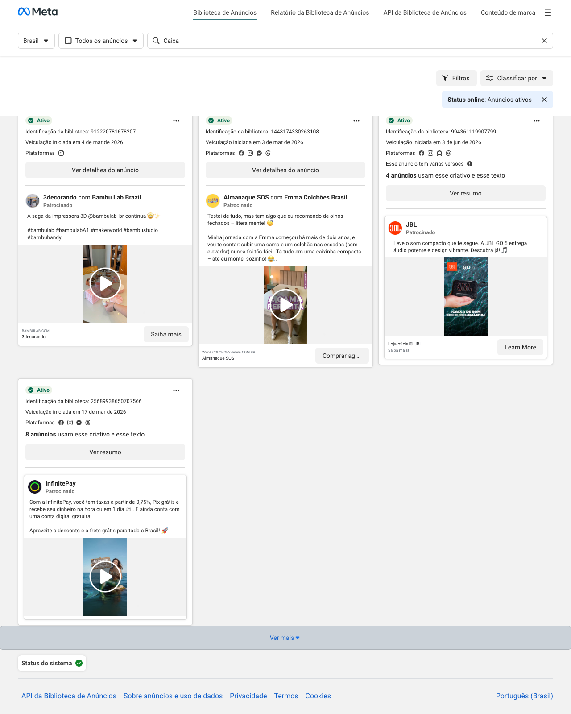

① Evento central: eleições brasileiras no 3º trimestre 重点事件：Q3 巴西大选
Mídia concorrente · anúncios políticos e eleitorais no Meta 竞媒动态 · Meta 政治/选举广告
📊 Resumo factual · Fact Summary
事实汇总 —— amostra de 127 anúncios, termos: eleições 2026 / eleição 2026 / voto / campanha eleitoral / Lula / Tarcísio / Flávio Bolsonaro / Ciro Gomes / Ratinho Junior / Ronaldo Caiado / PT / PL / PSDB / União Brasil / Progressistas / Republicanos / Governo Federal; não é o mercado completo
本期样本 127 条，非全量市场
- Ativos / inativos在投·已停: 5 ativos · 122 inativos;
56 pagadores distintos
5 条在投 · 122 条已停；共涉及 56 个不同出资方
- Tipos de anunciante广告主类型分布: Partidos 政党 39 · Governo 政府机构 14 · TSE / TRE 选举司法 13 · Pesquisa / institutos 民调·研究 1 · Sociedade civil 公民社会 1 · Outros / candidatos 其他·候选人 59
- Valores金额: 78/127 são anúncios eleitorais declarados com gasto público
(os demais são temáticos, sem valor divulgado pelo Meta); faixas observadas: R$1,5 mil a R$2 mil / R$100 mil a R$125 mil / R$10 mil a R$15 mil / R$125 mil a R$150 mil / R$15 mil a R$20 mil / R$175 mil a R$200 mil / R$1 mil a R$1,5 mil / R$2,5 mil a R$3 mil / R$200 mil a R$250 mil / R$20 mil a R$25 mil / R$25 mil a R$30 mil / R$3,5 mil a R$4 mil / R$300 mil a R$350 mil / R$30 mil a R$35 mil / R$350 mil a R$400 mil / R$35 mil a R$40 mil / R$4,5 mil a R$5 mil / R$40 mil a R$45 mil / R$45 mil a R$50 mil / R$4 mil a R$4,5 mil / R$50 mil a R$60 mil / R$5 mil a R$6 mil / R$6 mil a R$7 mil / R$70 mil a R$80 mil / R$7 mil a R$8 mil / R$80 mil a R$90 mil / R$8 mil a R$9 mil / R$900 a R$999 / R$90 mil a R$100 mil / R$9 mil a R$10 mil; impressões geralmente >1 mi
78/127 条为「已申报竞选广告」公开了花费（其余为议题类，Meta 不公开金额）；观察到的花费区间：R$1,5 mil a R$2 mil、R$100 mil a R$125 mil、R$10 mil a R$15 mil、R$125 mil a R$150 mil、R$15 mil a R$20 mil、R$175 mil a R$200 mil、R$1 mil a R$1,5 mil、R$2,5 mil a R$3 mil、R$200 mil a R$250 mil、R$20 mil a R$25 mil、R$25 mil a R$30 mil、R$3,5 mil a R$4 mil、R$300 mil a R$350 mil、R$30 mil a R$35 mil、R$350 mil a R$400 mil、R$35 mil a R$40 mil、R$4,5 mil a R$5 mil、R$40 mil a R$45 mil、R$45 mil a R$50 mil、R$4 mil a R$4,5 mil、R$50 mil a R$60 mil、R$5 mil a R$6 mil、R$6 mil a R$7 mil、R$70 mil a R$80 mil、R$7 mil a R$8 mil、R$80 mil a R$90 mil、R$8 mil a R$9 mil、R$900 a R$999、R$90 mil a R$100 mil、R$9 mil a R$10 mil；展示量普遍 >1 mi
- Período时间跨度: 2020-11 → 2026-07
- Observações特征观察: justiça eleitoral (TSE/TRE) e órgãos de governo concentram anúncios de
orientação ao voto e avisos de conformidade; partidos e candidatos concentram anúncios temáticos; os valores divulgados por anúncio ficam
em geral entre centenas e alguns milhares de reais — investimento pulverizado e de alta frequência.
选举司法(TSE/TRE)与政府机构以「投票指引/合规告知」类广告为主；政党/候选人以议题宣传为主；单条披露花费多在数百至数千雷亚尔量级，属小额高频投放。
Criativos e posicionamentos (grade da Biblioteca de Anúncios)创意/广告位截图


Anúncios ativos (clique para expandir) — 122 inativos não listados在投广告，点击展开详情；已停投 122 条不再列出
ProgressistasAtivoAnúncio eleitoral declarado 已申报竞选广告 · 💰R$900 a R$999
Pago por 出资方: Progressistas
As principais datas das Eleições 2026 reunidas em um só lugar. Salve este post e acompanhe o calendário eleitoral. #progressistas
2026年选举主要日期汇总在一处。收藏此帖并关注选举日历。#进步党
Marconi PerilloAtivoAnúncio eleitoral declarado 已申报竞选广告 · 💰R$1 mil a R$1,5 mil
Pago por 出资方: Marconi Perillo
Mais uma pesquisa, agora com mais de 3 mil entrevistas em todo o estado. O resultado mostra que muita gente não se esqueceu do trabalho que a gente fez. E ainda acredita que Goiás pode voltar a crescer. Mesmo oito anos depois que deixei o governo, mesmo com todo o peso da máquina do outro lado, o que vejo é o goiano olhando o trabalho de cada pré-candidato. Não só a propaganda. Agradeço de coração
又一项民调，这次在全州范围内采访了三千多人。结果显示，很多人并没有忘记我们做过的工作。他们仍然相信戈亚斯州能够重新增长。即使我离开政府已经八年，即使对方拥有整个行政机器的力量，我所看到的是，戈亚斯人正在审视每一位预候选人的工作，而不仅仅是宣传。衷心感谢。
Hissa AbrahãoAtivoAnúncio temático · valor não divulgado 议题类·金额未公开
Pago por 出资方: Hissa Abrahão
Sexto mandato. Presidente da Comissão de Transporte. Preso suspeito de ser dono oculto de empresa de ônibus e lavar dinheiro do PCC. O codinome nas mensagens: vereador. O crime organizado não invadiu a política brasileira. Ele foi convidado. No Ceará, o MP afirma que PCC e Comando Vermelho controlam cerca de 80 prefeituras. Em São Paulo, 12 eleitos em 2024 com ligações ao crime. E um promotor espe
第六任期。交通委员会主席。因涉嫌是公交公司隐名所有人和洗白PCC资金被捕。消息中的代号：市议员。有组织犯罪并未入侵巴西政治。它是被邀请来的。在塞阿拉州，检察院称PCC和红色司令部控制了约80个市政府。在圣保罗，2024年有12名当选者与犯罪有联系。还有一位检察官
📕 Anúncio temático/social: o Meta divulga gasto, impressões e público apenas para anúncios eleitorais declarados — para estes, não divulga (não é falha de dados).
议题/社会类广告：Meta 仅对已申报的竞选广告公开花费/展示量/受众，此类广告不公开（并非数据缺失）。
Lindbergh FariasAtivoAnúncio temático · valor não divulgado 议题类·金额未公开
Pago por 出资方: Lindbergh Farias
Julgamento do Eduardo Bolsonaro agendado para 16 de junho. Relembre aqui toda a nossa ofensiva contra esses traidores. Nós denunciamos toda as ações deles contra o Brasil para tentar garantir impunidade de Jair Bolsonaro, hoje condenado por tentativa e golpe de Estado. Existem momentos em que é preciso agir com firmeza, pegar a história pelas mãos e transformá-la. Se Eduardo Bolsonaro hoje está no
爱德华多·博索纳罗的审判定于6月16日进行。在此回顾我们对这些叛徒的全部攻势。我们举报了他们所有针对巴西的行为，试图确保雅伊尔·博索纳罗免于惩罚，后者现已因未遂政变被判刑。有些时刻需要坚定行动，把握历史并改变它。如果爱德华多·博索纳罗现在处于
📕 Anúncio temático/social: o Meta divulga gasto, impressões e público apenas para anúncios eleitorais declarados — para estes, não divulga (não é falha de dados).
议题/社会类广告：Meta 仅对已申报的竞选广告公开花费/展示量/受众，此类广告不公开（并非数据缺失）。
Cerveja Brahma OficialAtivoAnúncio temático · valor não divulgado 议题类·金额未公开
Pago por 出资方: Ambev
#CamisaDeTimeSim é para quem sabe o que é tendência e amor pelo seu time. Com Brahma, esse é o look para qualquer lugar. 0:00 / 0:10 #CamisaDeTimeSim Isso é Brahmosidade
#穿队服才对 是给懂潮流又爱球队的人准备的。配上布哈马啤酒，这身打扮去哪都行。0:00 / 0:10 #穿队服才对 这就是布哈马范儿
📕 Anúncio temático/social: o Meta divulga gasto, impressões e público apenas para anúncios eleitorais declarados — para estes, não divulga (não é falha de dados).
议题/社会类广告：Meta 仅对已申报的竞选广告公开花费/展示量/受众，此类广告不公开（并非数据缺失）。
Eleições · conformidade e mídia concorrente (TSE / plataformas / regras) 选举动态 · 合规与竞媒
2026年大选：选举宣传自8月16日起解禁——若昂佩索阿市议会
Eleições 2026: propaganda eleitoral estará liberada a partir de 16 de agosto Câmara Municipal de João Pessoa
2026年选举：选举宣传自8月16日起解禁 若昂佩索阿市议会
联邦区地区选举法院发布《选举宣传手册——2026年选举》——tre-df.jus.br
TRE-DF lança Cartilha de Propaganda Eleitoral – Eleições 2026 tre-df.jus.br
联邦区地区选举法院发布《选举宣传手册——2026年选举》 tre-df.jus.br
最高选举法院院长本周四召集部长会议讨论人工智能议题，并可能审议针对弗拉维奥的诉讼
Flávio Bolsonaro diz que Jair não sabia de vídeo de IA e defende uso O presidente do Tribunal Superior Eleitoral (TSE), ministro Kassio Nunes Marques, marcou para quinta-feira (13) uma reunião para discutir um dos temas que vai marcar esta eleição: o uso de inteligência artificial (IA).
弗拉维奥·博索纳罗称雅伊尔不知晓AI视频，并为其使用辩护。高等选举法院（TSE）院长卡西奥·努内斯·马克斯部长将周四（13日）定为会议日期，讨论本届选举的标志性议题之一：人工智能（AI）的使用。
卡西奥召集TSE会议讨论2026年选举中的AI问题——Vero Notícias
Kassio convoca reunião no TSE sobre IA nas eleições de 2026 Vero Notícias
卡西奥召集最高选举法院会议，讨论2026年选举中的人工智能问题 真实新闻
选举内幕：了解选举宣传何时开始及新规则。
Por Dentro das Eleições: saiba quando começa a propaganda eleitoral e conheça as novas regras Tribunal Superior Eleitoral
选举内幕：了解选举宣传何时开始及新规则 最高选举法院
最高选举法院与联邦总检察长办公室签署2026年选举人工智能良好实践协议——最高选举法院
TSE e AGU firmam acordo de boas práticas sobre IA nas Eleições 2026 Tribunal Superior Eleitoral
高等选举法院与联邦总检察院就2026年选举人工智能良好实践签署协议 高等选举法院
2026年大选中Google广告投放仍被禁止——共和党10
Impulsionamento no Google continua proibido nas Eleições 2026 Republicanos 10
2026年选举中谷歌广告投放仍被禁止。
Eleições 2026: TSE fecha acordo com ElevenLabs contra deepfakes de voz - Tribunal Superior Eleitoral
2026年大选：最高选举法院与ElevenLabs达成协议，防范语音深度伪造——最高选举法院
Eleições 2026: TSE fecha acordo com ElevenLabs contra deepfakes de voz Tribunal Superior Eleitoral
2026年大选：最高选举法院与ElevenLabs达成协议，防范语音深度伪造
最高选举法院公布2026年选举竞选特别基金分配方案 - 最高选举法院
TSE divulga distribuição do Fundo Especial de Financiamento de Campanha para as Eleições 2026 Tribunal Superior Eleitoral
最高选举法院公布2026年大选竞选特别基金分配方案
选举禁令在2026年大选前三个月对公职人员施加限制 - 最高选举法院
Defeso eleitoral impõe limites a agentes públicos a três meses das Eleições 2026 Tribunal Superior Eleitoral
选举禁期在2026年选举前三个月对公职人员施加限制。
Contexto político (pano de fundo) 政情动态（背景）
7 itens de baixo valor (ruído político) filtrados — ainda pesquisáveis no catálogo lateral
已过滤 7 条低价值政治口水，仍可在侧边目录搜索
西多尼奥·佩雷拉的得力助手离开总统府社会传播秘书处，以加强卢拉的连任竞选——法兰西新闻
Braço-direito de Sidônio Pereira deixa Secom para reforçar campanha de reeleição de Lula Francês News
Sidônio Pereira得力干将离开总统府传播秘书处，转投卢拉连任竞选团队
卡亚多称阿明尼奥·弗拉加为经济领域主要参考人物
Candidato à Presidência elogiou ex-presidente do BC em almoço com empresários em São Paulo; também mencionou o nome da economista Ana Carla Abrão
总统候选人在圣保罗与企业家共进午餐时称赞前央行行长；还提到经济学家安娜·卡拉·阿布拉昂的名字
乌戈·莫塔宣布支持卢拉连任
Presidente da Câmara afirma que petista é o candidato que “converge com aquilo que pensamos ser o melhor para o país”
众议院议长称，劳工党候选人是“符合我们认为对国家最有利方向”的候选人
卢拉在马尔科拉离职后任命新任办公室主任，马尔科拉曾被联邦警察调查提及
Oswaldo Malatesta Neto, novo chefe de gabinete de Lula. Reprodução/Linkedin O presidente Luiz Inácio Lula da Silva (PT) nomeou nesta segunda-feira (10) Oswaldo Malatesta Neto para ocupar o cargo de chefe de gabinete pessoal da Presidência da República.
奥斯瓦尔多·马拉泰斯塔·内托，卢拉新任办公室主任。复制/Linkedin 总统路易斯·伊纳西奥·卢拉·达席尔瓦（劳工党）于本周一（10日）任命奥斯瓦尔多·马拉泰斯塔·内托担任共和国总统个人办公室主任一职。
米纳斯州长之争及其对全国选举的影响 - O Assunto #1780
O líder nas pesquisas de intenção de votos disse que seria candidato ao governo do estado de Minas Gerais, mas seu partido disse que não. Ele insistiu e, mais de uma semana depois, conseguiu: na sexta-feira (7), o Republicanos confirmou que o senador Cleitinho Azevedo irá concorrer.
民调领先的候选人表示将竞选米纳斯吉拉斯州州长，但其政党表示不会。他坚持要求，一周多后终于如愿：周五（7日），共和党确认参议员克莱蒂尼奥·阿泽维多将参选。
竞逐总统府之际，卢拉提高对国会修正案的批评调门，弗拉维奥加强对联邦最高法院的抨击
O Congresso Nacional e o Supremo Tribunal Federal (STF) entraram no radar dos dois pré-candidatos à Presidência da República mais bem avaliados nas pesquisas eleitorais. O presidente Luiz Inácio Lula da Silva (PT) tem criticado as emendas parlamentares e proposto mudanças na sua execução, algo que tem o potencial de ampliar o embate com o Congresso Nacional.
国会和联邦最高法院（STF）已进入民调中排名前两位的总统预候选人的视野。总统路易斯·伊纳西奥·卢拉·达席尔瓦（劳工党）一直批评议员修正案，并提出改变其执行方式，这有可能扩大与国会的对抗。
② Panorama de notícias publicitárias 广告新闻概览
Clientes-chave (Secom / Caixa / BB / MS / Petrobras) 重点客户
2026年竞选：工会在巴西银行门前举行抗议——SindicarioNET
Campanha 2026: Sindicato realiza protesto em frente ao Banco do Brasil SindicarioNET
2026 campaign：工会将在巴西银行门前举行抗议活动——SindicarioNET
2026年竞选：巴西银行门前抗议活动 23张照片——SindicarioNET
Campanha 2026: Protesto em frente ao Banco do Brasil 23 fotos SindicarioNET
2026年竞选：巴西银行门前抗议活动 23张照片。
卫生部启动2026年多疫苗强化接种活动，面向15岁以下儿童和青少年 - 白河报
Ministério da Saúde lança Campanha de Multivacinação 2026 para crianças e adolescentes menores de 15 anos o rio branco
卫生部启动2026年多疫苗强化接种活动，面向15岁以下儿童和青少年 白河报
卫生部扩大儿童和青少年疫苗接种活动——spriomais
Ministério da Saúde amplia campanha de vacinação para crianças e adolescentes spriomais
卫生部扩大儿童和青少年疫苗接种宣传
卫生部扩大对赌徒的远程医疗服务，并主张限制广告投放 - JOTA Info
Ministério da Saúde amplia teleatendimento para apostadores e defende restringir publicidade JOTA Info
卫生部扩大对赌徒的远程医疗服务，主张限制广告 JOTA Info
社会传播秘书处推出广告“巴西的驾照已就绪。” - 广告界大腕
SECOM estreia campanha “A CNH do Brasil tá habilitada.” Grandes Nomes da Propaganda
SECOM推出宣传活动“巴西的驾照已就绪。” 广告界大腕云集
Outros clientes (agrupados por categoria) 其他客户 · 按类别分组
Ministérios 部委 15
教育部与国家机构联合发起宣传活动——广告界大咖
Ministério da Educação e Agência Nacional lançam campanha Grandes Nomes da Propaganda
教育部与国家机构联合推出“广告界名人”活动
DeBrito Brasil签署旅游部广告 - 广告界大腕
DeBrito Brasil assina campanha do Ministério do Turismo Grandes Nomes da Propaganda
DeBrito Brasil签约制作旅游部宣传 campaign 广告界大腕
公民部发起预防毒品使用宣传活动——Grandes Nomes da Propaganda
Ministério da Cidadania lança campanha de Prevenção ao Uso de Drogas Grandes Nomes da Propaganda
公民部推出毒品预防宣传活动 广告界大腕云集
国家机构为社会发展部推出新宣传片——广告界大咖
Agência Nacional apresenta nova campanha para o MDS Grandes Nomes da Propaganda
国家机构为社会发展部推出新宣传活动 广告界名人
巴西国家队与教育部庆祝新宣传活动取得积极成果——Janela Publicitária
Nacional e Ministério da Educação celebram números positivos em nova campanha Janela Publicitária
国家银行与教育部在新宣传活动中庆祝积极数据 广告之窗
卡米洛·桑塔纳将离开教育部，全身心投入塞阿拉州埃尔马诺的竞选活动 - Money Times
Camilo Santana deixará Ministério da Educação para se dedicar à campanha de Elmano no Ceará Money Times
卡米洛·桑塔纳将离开教育部，全力投入埃尔马诺在塞阿拉州的竞选——Money Times
… mais 9 itens no catálogo lateral另有 9 条见侧边目录
Bancos & Estatais 银行·国企 4
东北银行针对阿拉戈斯州的目标：今天上午8点30分，帕茹萨拉电视台 - TNH1
As metas do Banco do Nordeste para Alagoas: hoje, 8h30m, na TV Pajuçara TNH1
东北银行针对阿拉戈斯州的目标：今天上午8点30分，帕茹萨拉电视台TNH1
View360为东北银行制作的广告庆祝成果 - 广告界大腕
Campanha da View360 para o Banco do Nordeste celebra resultados Grandes Nomes da Propaganda
View360为东北银行打造的宣传活动庆祝成果 广告界名人
朱利奥·维齐亚克：反对派瞄准东北银行数十亿招标，要求设立议会调查委员会——UOL经济版
Júlio Wiziack: Oposição mira licitação bilionária do Banco do Nordeste e pede CPMI UOL Economia
朱利奥·维齐亚克：反对派瞄准东北银行数十亿招标，要求设立议会调查委员会 UOL经济版
巴伊亚州广告人签约东北银行宣传活动，聚焦创纪录业绩与区域变革力量！- Farol da Bahia
Publicitário baiano assina campanha para o Banco do Nordeste sobre resultados recordes e a força transformadora da região! Farol da Bahia
巴伊亚州广告人操刀东北银行宣传活动，聚焦创纪录业绩与该地区的变革力量！Farol da Bahia
Indústria & Associações 行业组织 18
ApexBrasil押注动物蛋白出口增长——Agrimidia
ApexBrasil aposta no crescimento das exportações de proteína animal Agrimidia
ApexBrasil押注动物蛋白出口增长 农业媒体
LINIKER在NOVA为SEBRAE的广告中演唱《玛丽亚，玛丽亚》——费尔南多·瓦斯康塞洛斯
LINIKER CANTA “MARIA, MARIA” EM CAMPANHA DA NOVA PARA O SEBRAE Fernando Vasconcelos
LINIKER在NOVA为小微企业支持服务局制作的广告中演唱《玛丽亚，玛丽亚》
巴西旅游局和巴西小微企业支持服务局推出名为DesBRAva的新宣传活动 Grandes Nomes da Propaganda
Embratur e Sebrae criam nova campanha chamada DesBRAva Grandes Nomes da Propaganda
巴西旅游局与小微企业服务局联合推出新活动DesBRAva 广告界名人
皮奥伊州主任代表Sebrae系统出席巴西旅游国际推广活动启动仪式——Sebrae新闻社
Diretor piauiense representa o Sistema Sebrae no lançamento de campanha internacional de divulgação do turismo do Brasil Agência Sebrae de Notícias
皮奥伊州主任代表小微企业支持服务局系统出席巴西旅游国际推广活动启动仪式
DeBrito Brasil出品，Sebrae全国新 campaign 彰显小企业主信念——nossomeio.com.br
Assinada pela DeBrito Brasil, nova campanha do Sebrae Nacional valoriza a crença do pequeno empreendedor nossomeio.com.br
DeBrito Brasil操刀，国家小微企业支持服务局新广告彰显小微创业者的信念
Nova为Sebrae创作宣传活动，鼓励小商户发展 - Janela Publicitária
Nova cria campanha para o Sebrae incentivar os pequenos negociantes Janela Publicitária
新党为小微企业服务局打造活动鼓励小商户 广告之窗
… mais 12 itens no catálogo lateral另有 12 条见侧边目录
🎨 Criativos ativos dos clientes (Biblioteca de Anúncios do Meta) 客户在投创意
13 criativos ativos na Biblioteca de Anúncios comum do Meta (FB/IG); a biblioteca comum não divulga gasto nem posicionamento — os criativos aparecem como captura e texto.共 13 条在投创意；普通库不公开花费/广告位，创意以截图与文案呈现。
Banco do Brasil巴西银行 T16 ativos6 条在投Biblioteca de Anúncios ↗

Banco do Brasil2026-05-15
Chegou a hora de você ter um cartão pra chamar de seu! Aproveite um limite de R$1.500, cashback, pontos e muito mais. Vem pro BB! 0:00 / 0:15 HTTPS://WWW.BB.COM.BR/SITE/PRA-VOCE/CONTAS/CONTA-UNIVERSITARIA/
是时候拥有一张属于您自己的卡了！享受 1500 雷亚尔额度、返现、积分等更多福利。快来巴西银行！0:00 / 0:15 HTTPS://WWW.BB.COM.BR/SITE/PRA-VOCE/CONTAS/CONTA-UNIVERSITARIA/
Banco do Brasil2026-03-27
Começar o ano com juros lá em baixo é no Crédito Consignado BB. Cola aí. Consulte as condições em bb.com.br/emprestimo Crédito BB: rápido, digital e sem burocracia. Learn More
新的一年从低息开始，就在巴西银行工资贷款。快来了解。详情请见 bb.com.br/emprestimo 巴西银行贷款：快速、数字化、无繁琐手续。 了解更多
Banco do Brasil2026-03-30
No app BB, você encontra as melhores vantagens para trocar de carro. Tudo online, seguro e sem entrada. Learn More
在巴西银行 App，您能找到换车的最佳优惠。全程在线、安全、零首付。 了解更多
Banco do Brasil2026-03-27
Começar o ano com juros lá em baixo é no Crédito Consignado BB. Cola aí. Consulte as condições em bb.com.br/emprestimo 0:00 / 0:15 Crédito BB: rápido, digital e sem burocracia.
新的一年从低息开始，就在巴西银行工资贷款。快来了解。详情请见 bb.com.br/emprestimo 0:00 / 0:15 巴西银行贷款：快速、数字化、无繁琐手续。
Banco do Brasil2026-06-17
O Cartão BB tem limite de R$ 1.500 pra você garantir seu show sem passar sufoco. Venha ser cliente e aproveite todos os benefícios! 0:00 / 0:19 O Cartão BB é da sua conta.
巴西银行卡提供 1500 雷亚尔额度，让您轻松看演出，无需手忙脚乱。快来成为客户，享受所有优惠！0:00 / 0:19 巴西银行卡，属于您的账户。
Banco do Brasil2026-05-27
Chega de pedir cartão emprestado pra pagar seu rolê! Abra uma conta direto no App BB: é rápido, de graça e você resolve tudo sozinho. Vem ser cliente BB. Learn More
别再借卡付你的玩乐开销了！直接在巴西银行 App 开户：快速、免费，一切自己搞定。快来成为巴西银行客户。了解更多
Secom宣传秘书处 T13 ativos3 条在投Biblioteca de Anúncios ↗

SECOM2026-07-10
Você já imaginou ter acesso a inúmeros benefícios para melhorar a sua qualidade de vida e bem-estar? Pois bem, o SECOM está aqui para oferecer exatamente isso.
你是否曾想过获得无数福利来改善生活质量和幸福感？那么，SECOM 正是为此而来。
Petrobras巴西石油 T13 ativos3 条在投Biblioteca de Anúncios ↗

Postos Petrobras2026-07-17
Agora já era! Descobriram a paixão por Postos Petrobras 💛💚
这下完了！他们爱上了 Petrobras 加油站 💛💚
Petrobras Futuros - Arte e Tecnologia2026-07-13
Agora somos Petrobras Futuros – Arte e Tecnologia. ✨
现在我们成了 Petrobras 未来——艺术与科技。✨
Caixa联邦储蓄银行 T11 ativos1 条在投Biblioteca de Anúncios ↗

Uaucaixa2026-07-04
Um mundo de vantagens para você resgatar. Troque seus pontos Uau CAIXA e aproveite mais de 1 milhão de produtos e experiências. 💙 #UauCAIXA UAUCAIXA.COM.BR Vantagens para você usar.
一个供您兑换的优惠世界。兑换您的 Uau CAIXA 积分，享受超过一百万种商品和体验。💙 #UauCAIXA UAUCAIXA.COM.BR 为您准备的福利。